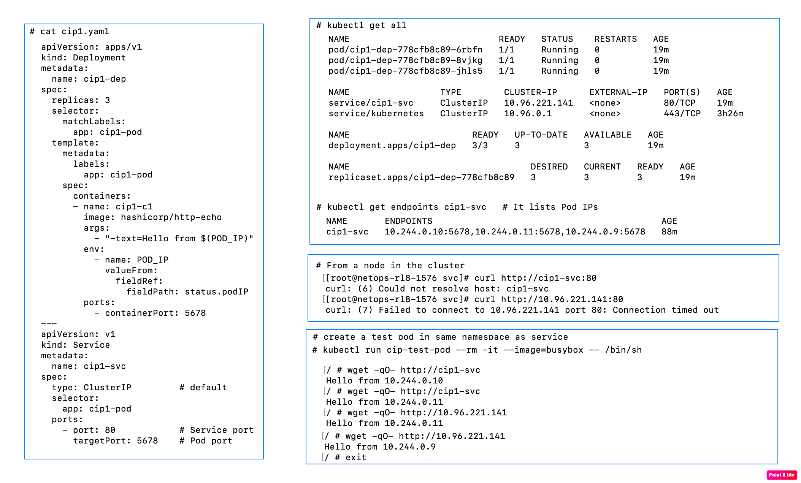

apiVersion: v1
kind: Service
metadata:
name: my-service
spec:
type: ClusterIP
selector:
app: myapp
ports:
- port: 80
targetPort: 8080
protocol: TCP<service-name>.<namespace>.svc.cluster.local;curl http://my-service;# Create a ClusterIP service
kubectl expose deployment myapp --port=80 --target-port=8080
# List services
kubectl get svc
# Describe
kubectl describe svc my-service
# View endpoints (Pod IPs behind the Service)
kubectl get endpoints my-service